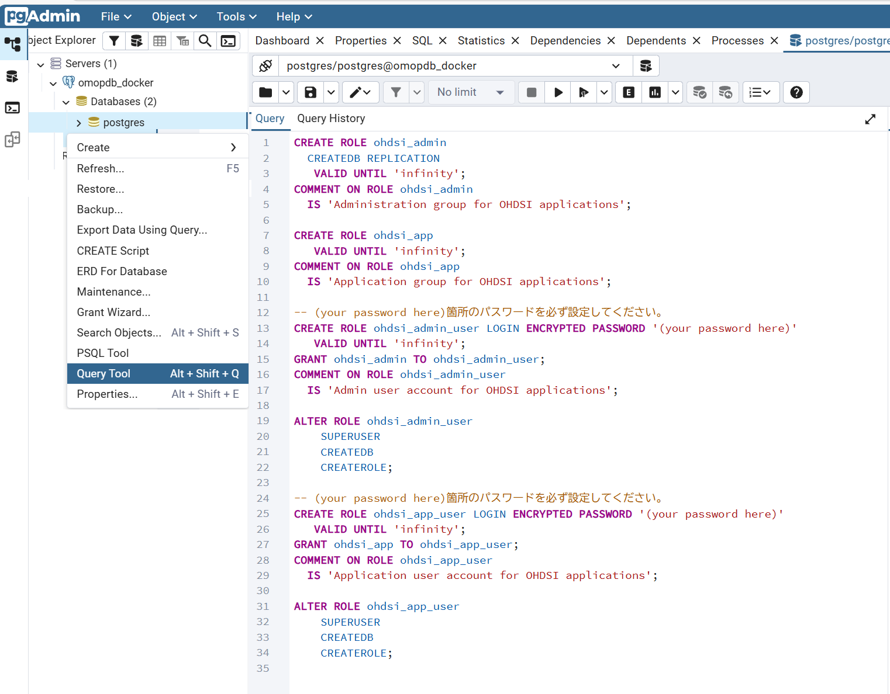
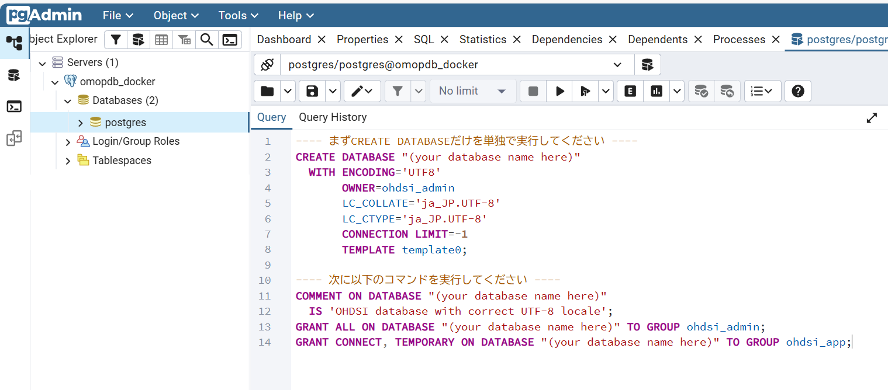

本ドキュメントは、臨中ネットETLプロジェクトの環境構築から実行準備、ETL実行、データ確定までの一連の手順と、各バッチファイルの役割・実行方法をまとめたものです。
⚠️ 重要な前提事項
このアプリケーションはPostgreSQLがインストール済であることを前提としています。
PostgreSQLのインストールが完了していない場合は、必ずインストールしてから本ドキュメントの手順を実行してください。
このドキュメントにはPostgreSQLやpgAdminなどのソフトウェアの操作説明は含んでいません。初めて環境を構築する際のデータベース初期作成手順のみpgAdminの基本的な操作が必要ですので、ご注意ください。
環境構築からデータ変換を実行するまでの一連の流れは以下のとおりです。
:::mermaid
:::
本プロジェクトの環境構築からETL変換・本番データ反映までの実行方法は、以下の２つの方法から選択できます。
初期データベース作成を行った後、ETL実行環境構築からデータ変換実行までの一連のプロセスを一括実行する方法です。
実行手順：
本ドキュメントの「B.環境構築手順」の以下の手順を実行してください
その後、ETL一括実行ツール オペレーションマニュアル に記載された手順に従って、B.環境構築手順2.2のスキーマ作成からC.データ変換実行手順のすべての手順を一括実行します
メリット：
デメリット：
すべての手順を個別に実行し、各ステップの進行状況を確認しながら進める方法です。
実行手順：
メリット：
⚠️ 手順を１つづつ実行する際の注意事項
- 各手順で説明している各バッチの実行はExploreからダブルクリック実行、またはコマンドプロンプトから実行コマンドを入力して実行してください。
- 各バッチ実行の前提条件が完了していることを確認してください。
- 実行順序を守ってください。
- ログは各バッチの同フォルダまたは
log/フォルダに出力されます。
💡 推奨事項
- 一般利用者：方法1（一括実行）の使用をお勧めします。特に同じ環境での再処理や本番運用での利用に適しています
- 学習者・技術者：方法2（個別実行）の使用をお勧めします。手順を確認しながら進められ、各ステップのログも詳細に確認できます
Githubまたはファイル共有などから入手した当アプリケーション資源を任意のフォルダに配置します。
プロジェクトフォルダ構造：
(任意のフォルダ)/rinchu-omop-etl/
├── 0000_setting/ 【環境設定ファイル・共通コマンド】
├── 1000_database_setup/ 【データベース・スキーマ・テーブル作成】
├── 2000_etl_setup/ 【ETLセットアップ】
├── 3000_load_source/ 【ソースデータ・マスタロード】
├── 4000_load_vocab/ 【ATHENA・マッピング・初期データロード】
├── 5000_etl_execute/ 【ETL実行・マッピング確認・本番デプロイ】
├── 6000_statistics/ 【Achilles統計データ作成】
├── 7000_export_omop/ 【OMOPデータCSV出力ツール】
├── 8000_ohdsi_tools_docker/ 【OHDSI Tools Docker環境】
├── D000_Documents/ 【各種ドキュメント】
├── L000_LogArchive/ 【ログアーカイブ】
├── S000_export_source/ 【ソースDB抽出ツール】
├── execute_all_process.bat 【ETL一括実行CUIツール】
├── execute_all_process.hta 【ETL一括実行GUIツール】
├── execute_all_process.md 【ETL一括実行ツール説明】
└── README.md 【このファイル】
⚠️ 資源配置の注意事項
- 日本語を含むフォルダに配置するとBATが正常に動作しない場合があります。
C:\rinchu-omop-etlやD:\rinchu\rinchu-omop-etlなどのシンプルなフォルダ配置を推奨します。
臨中標準データベースからデータをCSV形式で抽出し、以下のフォルダに配置します。
└── 3000_load_source/ 【ソースデータ・マスタロード】
└── dat/ 臨中DBデータCSV配置フォルダ
├── PatientIdentification.csv 患者基本情報データ
├── PatientAddress.csv 患者住所データ
├── PatientVisit.csv 患者来院履歴データ
├── PatientDisease.csv 患者病名データ
├── ObservationResult.csv 検体検査結果データ
├── PrescriptionData.csv 処方データ
└── InjectionData.csv 注射データ
OHDSI ATHENAから取得したVocabularyデータをCSV形式で抽出し、以下のフォルダに配置します。
└── 4000_load_vocab/ 【ATHENA・マッピング・初期データロード】
└── athena/ ATHENAボキャブラリCSV配置フォルダ
├── CONCEPT.csv コンセプト定義
├── CONCEPT_ANCESTOR.csv コンセプト階層関係
├── CONCEPT_CLASS.csv コンセプト分類
├── CONCEPT_RELATIONSHIP.csv コンセプト関連
├── CONCEPT_SYNONYM.csv コンセプト同義語
├── DOMAIN.csv ドメイン定義
├── DRUG_STRENGTH.csv 医薬品力価
├── RELATIONSHIP.csv 関連タイプ
└── VOCABULARY.csv ボキャブラリメタデータ
⚠️ 注意事項
- このプロジェクト配布資源にはATHENA Vocabularyデータを同梱していますので、通常はATHENAからの再取得は不要です。
- ATHENAから新バージョンのVocabularyを個別に取得して使用したい場合のみ、自身で入手・配置してください。
- その場合、同梱しているsource to concept mapが使用しているConceptのVocabularyを必ず含めて入手してください。
作成するOMOPデータベースの作成に先立ち、以下の事項をあらかじめ検討し、決定してください。
決定が必要なパラメータ：
| パラメータ | 説明 | 設定例 |
|---|---|---|
PGUSER |
ETL処理がDBにアクセスする際のユーザー名 | ohdsi_app_user |
PGPASSWORD |
ETL処理がDBにアクセスする際のユーザーのパスワード | app1 |
PGDATABASE |
ETL処理がアクセスするデータベース名 | OHDSI |
SOURCE_SCHEMA |
ソースデータ用スキーマ名 | source |
WORKING_SCHEMA |
中間テーブル用スキーマ名 | stage |
PRODUCTION_SCHEMA |
OMOP CDMテーブル用スキーマ名 | omop |
ATLASRESULT_SCHEMA |
Achilles統計テーブルスキーマ名 | result |
CARE_SITE_SOURCE_VALUE |
ソースデータ医療機関の医療機関番号（７桁） | 9110057 |
0000_setting/_env.bat は、以降の手順で実行する各バッチ処理が使用する共通のパラメータ設定コマンドです。
0000_setting/_env.batをテキストエディタで編集し、2.1で決定したOMOPデータベース各種パラメータを設定してください。
パラメータと意味は以下の通りです。
PGUSER：ETL処理がDBにアクセスする際のユーザー名PGPASSWORD：ETL処理がDBにアクセスする際のユーザーのパスワードPGDATABASE：ETL処理がアクセスするデータベース名SOURCE_SCHEMA：ソースデータ用スキーマ名WORKING_SCHEMA：中間テーブル用スキーマ名PRODUCTION_SCHEMA：OMOP CDMテーブル用スキーマ名ATLASRESULT_SCHEMA：Achilles統計テーブルスキーマ名CARE_SITE_SOURCE_VALUE：ソースデータ医療機関の医療機関番号（７桁）PGS_UNLOGGED：テーブル作成後にUNLOGGED化する場合は Y を設定（省略時または空の場合はUNLOGGED化しない）[_env.batの内容]REM 環境変数一括設定ファイル
REM PostgreSQL接続情報
SET PGUSER=ohdsi_app_user
SET PGPASSWORD=(パスワード)
REM データベース・スキーマ情報
SET PGDATABASE=ohdsi
SET SOURCE_SCHEMA=source
SET WORKING_SCHEMA=stage
SET PRODUCTION_SCHEMA=omop
SET ATLASRESULT_SCHEMA=result
REM OMOP病院固有設定値情報
REM care_site_source_valueは医療機関番号７桁を設定してください
REM 例）9110057 ※care_site.care_site_source_valueの値と一致すること
SET CARE_SITE_SOURCE_VALUE=9110057
REM POSTGRESQL UNLOGGEDテーブル設定[Y/N]
REM Yに設定するとテーブル作成後にUNLOGGED化してETL処理を高速化します。ただしクラッシュ時にデータが失われるデメリットがあります。
REM SET PGS_UNLOGGED=Y
⚠️ 注意事項（PGS_UNLOGGED について）
効果：
- WAL（Write-Ahead Logging）への書き込みが不要になるため、テーブルへのINSERT/UPDATE処理が高速化されます（処理内容によって数倍程度の速度向上が見込めます）。
リスク：
- PostgreSQLプロセスが異常終了（クラッシュ）した場合、UNLOGGEDテーブルのデータは自動的に切り捨てられ、復元できません。
推奨：
- 通常は
PGS_UNLOGGED=Yの設定は推奨しません。- 大量データでETL実行時間が運用上受容できない場合のみ、クラッシュ時にETL再実行によるリカバリを受容する前提でUNLOGGEDを使用してください。
1000_database_setup/01_database/01_create_user.sql にはデータベースユーザ作成のコマンドが、
1000_database_setup/01_database/02_create_database.sql にはOMOPデータベース作成のコマンドが記述されています。
実行する前に 01_create_user.sql のユーザのパスワードと、02_create_database.sql の作成するデータベース名を目的とする値に編集してください。
CREATE ROLE ohdsi_app_user LOGIN ENCRYPTED PASSWORD '(your password here)'
VALID UNTIL 'infinity';
CREATE ROLE ohdsi_app_user LOGIN ENCRYPTED PASSWORD '(your password here)'
VALID UNTIL 'infinity';
CREATE DATABASE用SQL
CREATE DATABASE "(your database name here)"
WITH ENCODING='UTF8'
OWNER=ohdsi_admin
LC_COLLATE='ja_JP.UTF-8'
LC_CTYPE='ja_JP.UTF-8'
CONNECTION LIMIT=-1
TEMPLATE template0;
DATABASEコメント・権限設定用SQL
COMMENT ON DATABASE "(your database name here)"
IS 'OHDSI database with correct UTF-8 locale';
GRANT ALL ON DATABASE "(your database name here)" TO GROUP ohdsi_admin;
GRANT CONNECT, TEMPORARY ON DATABASE "(your database name here)" TO GROUP ohdsi_app;
1000_database_setup/01_database/01_create_user.sql および 02_create_database.sql の内容をPgAdminのクエリエディタにコピー＆ペーストして実行し、ユーザとデータベースを作成します。
⚠️ 注意事項
- (your password here)のところは先に決めたパスワードに変更してから実行してください。

⚠️ 注意事項
- (your database name here)のところは先に決めたデータベース名に変更してから実行してください。
- すべてを一括で実行するとエラーになります。まずはCREATE DATABASEのSQL文を選択して実行し、次にCOMMENT ON DATABASE以降のSQL文を選択して実行してください。（CREATE DATABASEのSQL文とCOMMENT ON DATABASE以降のSQL文を分けて貼り付けてもよいです）
- OS環境によってはCREATE DATABASEのSQL文を実行するとロケールに関するエラーが出る場合があります。その場合は以下のようにロケールを変更して実行してください。
LC_COLLATE='ja_JP.UTF-8' --> 'C.UTF-8'
LC_CTYPE='ja_JP.UTF-8' --> 'C.UTF-8'

大量データ変換処理を最適化するためのパラメータ設定を行います。この設定はこのデータベースだけに有効な設定ですので、同じPostgreSQLインスタンスに他DBがある場合も、他DBに影響を与えません。
| パラメータ | 設定値 | 説明 |
|---|---|---|
work_mem |
256MB |
ソート・ハッシュ等のクエリ作業メモリ上限。ETL の重い集計・JOIN を On-Memory で完了させ、テンポラリファイル書き出しを回避します。数値を大きくすると逆効果になる場合があり、256MB を適正値としています。 |
hash_mem_multiplier |
2.0 |
Hash 系オペレータ (HashAggregate / Hash Join) のみ work_mem × multiplier を上限に許容する係数。ここでは Hash 系のみ最大 512MB まで許容して、ETL 中の大規模 Hash Join のテンポラリファイル書き出しを回避します。 |
max_parallel_workers_per_gather |
4 |
単一クエリの Gather ノードあたりに起動する並列ワーカー数の上限。重い View の Parallel Seq Scan を 4 ワーカーで並列実行します。 |
parallel_setup_cost |
100 |
並列実行プラン採用時に発生する起動コスト見積。デフォルト (1000) より低く設定し、プランナが並列計画を採用しやすくします。 |
parallel_tuple_cost |
0.01 |
並列ワーカー → リーダーへ 1 行転送するコスト見積。デフォルト (0.1) より低く設定し、行数の多い処理でも並列計画が選ばれやすくする。 |
実行方法：
1000_database_setup/01_database/03_config_database.bat を実行
💡 本ステップを 追加した理由
従来の処理設計では大規模データベースの変換にかかる処理時間が非常に長く、機器の処理性能によっては変換処理が完遂できない課題がありました。このステップを追加することで、ETLの処理を最適化し、全体としての処理時間を短縮しました。
作成したデータベースに４つのスキーマを作成します。
SOURCE_SCHEMA：ソースデータ用スキーマ名（臨中DBレプリカテーブル、各種マスタテーブル用）(ex: source)WORKING_SCHEMA：ETLステージングテーブル用スキーマ名 (ex: stage)PRODUCTION_SCHEMA：OMOP CDM用スキーマ名 (ex:omop)ATLASRESULT_SCHEMA：ATLAS/Achillesテーブル用スキーマ名 (ex:result)0000_setting/_env.batが設定済であること1000_database_setup/02_schema/create_schema.bat を実行します。
ソースデータ用スキーマに以下のテーブルを作成します。
1. 臨中標準データベースレプリカテーブル
2. 各種マスタテーブル
0000_setting/_env.batが設定済であること1000_database_setup/03_table_source/create_table.bat を実行します。
OMOP関連の以下のテーブルを作成します。
0000_setting/_env.batが設定済であること1000_database_setup/04_table_omop/create_table.bat を実行します。
臨中データベースからOMOP変換を行うSQLをステージング用スキーマにViewとして作成します。
0000_setting/_env.batが設定済であること2000_etl_setup/bat/create_etl.BAT を実行します。
⚠️ 重要な注意事項
- 既存データは削除されます：各インポートSQLは実行前にTRUNCATE文でテーブルの既存データを削除します。
- 再実行時は既存データが失われることに注意してください。
0000_setting/_env.batが設定済であること3000_load_source/dat/ に保存されていること。01_import_source.sqlに記述している内容と一致していること。01_import_source.sqlに記述している以下のコマンドで実行します。ファイル名が異なる場合は SQLファイル内のファイル名を修正する必要があります。⚠️ 重要な注意事項
- 既存データは削除されます：各インポートSQLは実行前にTRUNCATE文でテーブルの既存データを削除します。
- 再実行時は既存データが失われることに注意してください。
[01_import_source.sql]
\echo ====================================
\echo ==== execute data loading =====
\echo ====================================
\echo ==== PatientIdentification ====
\copy "@schema"."patientidentification" from '../dat/PatientIdentification.csv' csv header
\echo ==== PatientAddress ====
\copy "@schema"."patientaddress" from '../dat/PatientAddress.csv' csv header
\echo ==== PatientVisit ====
\copy "@schema"."patientvisit" from '../dat/PatientVisit.csv' csv header
\echo ==== PatientDisease ====
\copy "@schema"."patientdisease" from '../dat/PatientDisease.csv' csv header
\echo ==== ObservationResult ====
\copy "@schema"."observationresult" from '../dat/ObservationResult.csv' csv header
\echo ==== PrescriptionData ====
\copy "@schema"."prescriptiondata" from '../dat/PrescriptionData.csv' csv header
\echo ==== InjectionData ====
\copy "@schema"."injectiondata" from '../dat/InjectionData.csv' csv header
各種マスタCSVファイルが 3000_load_source/mst/ に保存されていること。
保存したCSVファイルは 02_import_master.sqlに記述している内容と一致していること。
※データベースへのロードは 02_import_master.sqlに記述している以下のコマンドで実行します。ファイル名やCSVの形式、文字エンコードが変更になった場合はSQLファイル内のファイル名やCOPYコマンドオプションを修正する必要があります。
[02_import_master.sql]
\echo ====================================
\echo ==== execute data loading =====
\echo ====================================
\echo ==== mst_medis_byomei ====
\copy "@schema"."mst_medis_byomei" from '../mst/medis_byomei_nmain516.txt' csv ENCODING 'SJIS'
\echo ==== mst_medis_hot13 ====
\copy "@schema"."mst_medis_hot13" from '../mst/medis_iyakuhin_20250331_utf8.csv' csv header ENCODING 'UTF8'
\echo ==== mst_zipcode ====
\copy "@schema"."mst_zipcode" from '../mst/utf_ken_all.csv' csv ENCODING 'UTF8'
マスタファイルについて：
3000_load_source/bat/01_import_source.BAT を実行して、臨中データベース抽出データをロードします。3000_load_source/bat/02_import_master.BAT を実行して、各種マスタCSVをロードします。⚠️ 重要な注意事項
- 既存データは削除されます：各インポートSQLは実行前にTRUNCATE文でテーブルの既存データを削除します。
- 再実行時は既存データが失われることに注意してください。
ATHENA等から取得したボキャブラリCSVをロードします。
0000_setting/_env.batが設定済であること4000_load_vocab/dat/ に保存されていること。01_import_athena.sqlに記述している内容と一致していること。01_import_athena.sqlに記述している以下のコマンドで実行します。ファイル名が異なる場合は SQLファイル内のファイル名を修正する必要があります。⚠️ 重要な注意事項
- 既存データは削除されます：各インポートSQLは実行前にTRUNCATE文でテーブルの既存データを削除します。
- 再実行時は既存データが失われることに注意してください。
[01_import_athena.sql]
\echo ====================================
\echo ==== execute data loading =====
\echo ====================================
\echo ==== domain ====
\copy "@schema"."domain_f" from '../dat/DOMAIN.csv'WITH (FORMAT CSV, DELIMITER E'\t', HEADER true, QUOTE E'\b', NULL '', ENCODING 'UTF8')
\echo ==== vocabulary ====
\copy "@schema"."vocabulary_f" from '../dat/VOCABULARY.csv'WITH (FORMAT CSV, DELIMITER E'\t', HEADER true, QUOTE E'\b', NULL '', ENCODING 'UTF8')
\echo ==== concept_class ====
\copy "@schema"."concept_class_f" from '../dat/CONCEPT_CLASS.csv'WITH (FORMAT CSV, DELIMITER E'\t', HEADER true, QUOTE E'\b', NULL '', ENCODING 'UTF8')
\echo ==== concept ====
\copy "@schema"."concept_f" from '../dat/CONCEPT.csv'WITH (FORMAT CSV, DELIMITER E'\t', HEADER true, QUOTE E'\b', NULL '', ENCODING 'UTF8')
\echo ==== concept_ancestor ====
\copy "@schema"."concept_ancestor_f" from '../dat/CONCEPT_ANCESTOR.csv'WITH (FORMAT CSV, DELIMITER E'\t', HEADER true, QUOTE E'\b', NULL '', ENCODING 'UTF8')
\echo ==== concept_relationship ====
\copy "@schema"."concept_relationship_f" from '../dat/CONCEPT_RELATIONSHIP.csv'WITH (FORMAT CSV, DELIMITER E'\t', HEADER true, QUOTE E'\b', NULL '', ENCODING 'UTF8')
\echo ==== drug_strength ====
\copy "@schema"."drug_strength_f" from '../dat/DRUG_STRENGTH.csv'WITH (FORMAT CSV, DELIMITER E'\t', HEADER true, QUOTE E'\b', NULL '', ENCODING 'UTF8')
\echo ==== relationship ====
\copy "@schema"."relationship_f" from '../dat/RELATIONSHIP.csv'WITH (FORMAT CSV, DELIMITER E'\t', HEADER true, QUOTE E'\b', NULL '', ENCODING 'UTF8')
4000_load_vocab/bat/01_import_athena.BAT を実行します。
各種マスタとATHENA Vocabularyを連結して自動生成可能なマッピングテーブルを生成し、4000_load_vocab/stcm フォルダにsource_to_concept_mapインポート用CSVファイルを生成します。
具体的には以下４種類のVocaburary Mappingデータを自動生成します。
source_to_concept_map_ATHENA_ICD10.csv : ATHENA conceptとconcept_relationshipからICD10(non-standard) to Standard Vocabularyへのマッピングテーブルsource_to_concept_map_ATHENA_ICD10_MEDISEXTENTION.csv : MEDIS病名マスタのICD10コードのうち、ICD10に合致しないコードをICD10CM等にマッピングした補完マッピングテーブルsource_to_concept_map_MEDIS_DIAGKNR.csv : MEDIS病名マスタの病名管理番号からStandard Vocabularyへのマッピングテーブル (病名管理番号->ICD10->Standard Vocabulary)source_to_concept_map_MEDIS_DIAGEXC.csv : MEDIS病名マスタの病名交換用コードからStandard Vocabularyへのマッピングテーブル (病名交換用コード->ICD10->Standard Vocabulary)0000_setting/_env.batが設定済であること4000_load_vocab/bat/02_generate_automapping.BAT を実行します。
4000_load_vocab/stcmフォルダに配置されたCSVをETLのVocabulary Mappingで使用するsource_to_concept_mapに一括でインポートします。
フォルダに配置されるファイルは以下を想定しています。
source_to_concept_map_JLAC.csv : observationresultの標準検査項目コードをmeasurement.measurement_concept_idに変換source_to_concept_map_RINCHU_DIS_STATUS.csv : patientdiseaseの主診断フラグ、疑いフラグをcondition.condition_status_concept_idに変換source_to_concept_map_RINCHU_DRUG_ROUTE.csv : prescription/injectiondataの投与経路をdrug_exposure.route_concept_idに変換source_to_concept_map_RINCHU_DRUG_UNIT.csv : prescription/injectiondataの標準単位コードをdrug_exposure.unit_concept_idに変換source_to_concept_map_RINCHU_EVENT_TYPE.csv : omop共通のtype_concept_idに変換source_to_concept_map_RINCHU_OBX_OPERATOR.csv : observationresultの検査結果値に含む等符号をmeasurement.operator_concept_idに変換source_to_concept_map_RINCHU_OBX_UNIT.csv : observationresultの標準単位コードをmeasurement.unit_concept_idに変換source_to_concept_map_RINCHU_OBX_VALUE.csv : observationresultの結果値をmeasurement.value_concept_idに変換source_to_concept_map_RINCHU_SPM_CD.csv : observationresultの標準材料コードをspecimen.specimen_concept_idに変換source_to_concept_map_RINCHU_VISIT.csv : patientvisitのADTセグメントをvisit_occurrence.visit_concept_idに変換、退院理由をdischarge_concept_idに変換source_to_concept_map_YJ.csv : prescription/injectiondataのYJコードをdrug_exposure.drug_concept_idに変換⚠️ 重要な注意事項
- 配置したCSVファイルはすべてインポートされます：上記ファイル以外に配置したCSVファイルもすべてインポートされます。バックアップファイルなどインポートが不要なCSVファイルは配置しないようにしてください。
- 既存データは削除されます：各インポートSQLは実行前にTRUNCATE文でテーブルの既存データを削除します。既存のデータが失われることに注意してください。
- 実行時にバックアップを取得します:実行時に自動的に登録済のマッピングテーブルをbackupフォルダに出力し履歴データとして保存します。変更履歴の確認や過去のデータに復元が必要な場合にはbackupフォルダに保存されたcsv(zip圧縮済)を使用してください。
4000_load_vocab/bat/03_import_stcm.BAT を実行します。
4000_load_vocab/initdataフォルダに配置されたlocation, care_site, providerに登録するCSVを一括でインポートします。
フォルダに配置されるファイルは以下を想定しています。
LOCATION.csv : ４７都道府県が登録されたlocation登録用データ
CARE_SITE.csv : 臨中ネット参加医療機関が登録されたcare_site登録用データ
PROVIDER.csv : SS-MIX2標準診療科コードが登録されたprovider登録用データ
CDM_SOURCE.csv : CDMの基本情報が登録されたデータ
METADATA.csv : CDMの各種属性情報が登録されたデータ
(1)に記載したCSVファイルが配置されていること
4000_load_vocab/bat/04_import_initdata.BAT を実行します。
ここからはソースデータをOMOP形式に変換する処理を実行する手順を示します。
💡 補足説明
- ETLのプロセスフローはETL pipeline Documentを参照してください。
- ETLのデータ変換仕様はETL Specification Document(Rabbit in A Hat)を参照してください。
臨中データベースの各テーブルからOMOP変換用ステージングテーブルを生成するETL処理を実行します。
このETL処理ではすべてのVocabulary Mappingは行わず、データ形式の変換だけを行います。次の手順でVocabulary Mappingの洗練を行った後に、Vocabulary Mappingを伴うデータ変換を行います。
person, visit_occurrence, death:
(テーブル名_s) : データ形式だけを変換した中間テーブル(vocabulary mappingは未実施)
(テーブル名_m) : Vocabulary Mapping結果を付加した中間テーブル
5000_etl_execute/bat/01_etl_execution_to_stem.bat を実行します。
ステージング(中間)テーブル stem_source に source_to_concept_map を介してconceptと結合した VIEW v_stem を stem_m に書き出します（TRUNCATE → INSERT → ANALYZE）。
stem_m は次節 3.3 のマッピングチェックリストの入力として、また 3.4 の OMOP 形式変換における各ドメイン (condition_occurrence_m 等) の入力として使用されます。
💡 本ステップを 追加した理由
従来の処理設計では大規模データベースの変換にかかる処理時間が非常に長く、機器の処理性能によっては変換処理が完遂できない課題がありました。このステップを追加することで、これ以降の各ステップにかかる処理を軽量化し、全体としての処理時間を短縮しました。
5000_etl_execute/bat/02_etl_execution_stem_mapped.bat を実行します。
ステージング(中間)テーブルに生成されたデータとsource_to_concept_mapのマッピングテーブルから、ソースコードのマッピング状況チェックリストCSVファイルを作成します。
チェックリストCSVは 5000_etl_execute/checklist/source_to_concept_map_checklist_yyyymmddhhnnss.csv に出力されます。
チェックリストCSVを活用してVocabulary Mappingの拡充・洗練を行うことができます。
💡 マッピング確認・洗練サイクルの流れ
- マッピングチェックリストを利用して追加マッピングすべきコードを選定する
- マッピングを追加・変更したマッピングテーブルのCSVファイルを作成
- 追加・変更したマッピングテーブルのCSVファイルを
4000_load_vocab/stcmフォルダに配置- 2.3 source_to_concept_map一括インポートを再実行
- 3.2 中間テーブルマッピング付与を再実行（stem_m だけを更新するため stem_source の再構築は不要）
- 3.3 マッピングチェックリスト出力を再実行し、マッピング洗練の結果を確認
- 1から6を繰り返し
5000_etl_execute/bat/03_mapping_checklist.bat を実行します。
ステージング(中間)テーブルに生成されたデータとsource_to_concept_mapのマッピングテーブルを結合し、OMOP CDM形式のテーブルを生成するETL処理を実行します。
このETL処理では、OMOP CDM形式の必須項目充足チェックを行い、正常データとエラーデータに仕分けを行います。
エラーとなったデータの内容を確認し、解消のためのアクションを実施した後、再度このETL処理を実行します。失敗データの内容確認が完了するまでこの変換処理を繰り返します。
また、上記の処理に加えて、正常データをもとに以下のテーブル集計処理を行います。
5000_etl_execute/bat/04_etl_execution_to_final.bat を実行します。
OMOP CDM必須項目充足チェックの成功、失敗の件数を集計し、確認用リストCSVファイルを作成します。
5000_etl_execute/bat/05_result_checklist.bat を実行します。
以下の実行レポートが 5000_etl_execute/result/に出力されます。
report_etl_errors.csv テーブルごとの成功・失敗を合計した総レコード件数、エラーとなったレコード件数・割合をフィールド別に集計しています。
[report_etl_errors.csvイメージ]
| table_name | total_count | error_field | error_count | error_percentage |
|---|---|---|---|---|
| person | 100000 | (No error) | ||
| condition_occurrence | 100000 | condition_concept_id | 100 | 1 |
| drug_exposure | 200000 | drug_exposure_id | 400 | 0.2 |
(table_name)_e.csv テーブルごとのエラーレコードを出力しています。
変換に成功したデータ、およびVocabulary関連データをOMOP CDMスキーマのテーブルに反映します。
5000_etl_execute/bat/06_production_deployment.bat を実行します。
OHDSIのWebAPIツールから生成したSQLを使用して、AtlasのData Source画面の各種レポートを表示するためのコンセプト階層データを生成します。
0000_setting/_env.batが設定済であること6000_statistics /bat/01_achilles_concept_hierarchy.bat を実行します。
OHDSIのAchillesツールから生成したSQLを使用して、OMOP CDMデータの統計情報を生成します。
ATLASでの分析に必要なデータ品質指標と記述統計を計算します。
0000_setting/_env.batが設定済であること6000_statistics/bat/02_achilles_statistics.bat を実行します。
実行結果は ATLASRESULT_SCHEMA に保存されます。
OHDSIのWebAPIツールから生成したSQLを使用して、Achilles統計のコンセプト別レコード数を集計します。
0000_setting/_env.batが設定済であること⚠️ 注意事項
Achilles統計の実行が完了していないければ、カウント保存用テーブルが作成されていないためこの集計処理は実行できません。
6000_statistics /bat/03_achilles_concept_count.bat を実行します。
ETL処理の各段階で出力されたログファイルをタイムスタンプ付きのアーカイブフォルダに保存します。
アーカイブされたログファイルは実行時のタイムスタンプ（YYYYMMDDHHNNSS形式）で作成されたフォルダ配下に、元のフォルダ構造を保持して保存されます。
以下のフォルダからログファイル（*.log）が収集されます：
1000_database_setup/02_schema1000_database_setup/03_table_source1000_database_setup/04_table_omop2000_etl_setup/log3000_load_source/log4000_load_vocab/log5000_etl_execute/logS000_export_source/logL000_LogArchive/archive_logs.bat を実行します。
実行後、L000_LogArchive/YYYYMMDDHHNNSS/ 配下に各フォルダ構造が再現され、すべてのログファイルが移動されます。
実行すると以下のような構造でログファイルがアーカイブされます：
L000_LogArchive/
└── yyyymmddhhnnss/
├── 1000_database_setup/
│ ├── 02_schema/
│ │ └── create_schema_yyyymmdd_hhnnss.log
│ ├── 03_table_source/
│ │ ├── create_table_yyyymmdd_hhnnss.log
│ │ └── drop_tables_yyyymmdd_hhnnss.log
│ └── 04_table_omop/
│ └── create_table_yyyymmdd_hhnnss.log
├── 2000_etl_setup/
│ └── log/
│ └── create_etl_yyyymmdd_hhnnss.log
├── 3000_load_source/
│ └── log/
│ ├── 01_import_source_yyyymmdd_hhnnss.log
│ └── 02_import_master_yyyymmdd_hhnnss.log
├── 4000_load_vocab/
│ └── log/
│ ├── 01_import_athena_yyyymmdd_hhnnss.log
│ ├── 02_generate_automapping_yyyymmdd_hhnnss.log
│ ├── 03_import_stcm_yyyymmdd_hhnnss.log
│ └── 04_import_initdata_yyyymmdd_hhnnss.log
└── 5000_etl_execute/
└── log/
├── 01_etl_execution_to_stem_yyyymmdd_hhnnss.log
├── 02_etl_execution_stem_mapped_yyyymmdd_hhnnss.log
├── 03_mapping_checklist_yyyymmdd_hhnnss.log
├── 04_etl_execution_to_final_yyyymmdd_hhnnss.log
├── 05_result_checklist_yyyymmdd_hhnnss.log
└── 06_production_deployment_yyyymmdd_hhnnss.log
データ変換実行後、以下の目的に使用可能なツールを備えています
OMOP CDMスキーマの各テーブルをCSVファイルとしてエクスポートします。
データの配布や別環境への移行に使用できます。
0000_setting/_env.batが設定済であること7000_export_omop/bat/export_omop.BAT を実行します。
エクスポートされたCSVファイルは 7000_export_omop/dat/ に保存されます。
⚠️ 注意事項
7000_export_omop/bat/export_omop.sqlは初期状態では person_id < 100 の条件に限定しています。用途や目的にそった抽出条件に修正してください。
[export_omop.sql]
\echo ==== person ====
\COPY (SELECT * FROM @schema.person WHERE person_id <= 100) TO '../dat/person.csv' WITH CSV HEADER;
\echo ==== death ====
\COPY (SELECT * FROM @schema.death limit 100) TO '../dat/death.csv' WITH CSV HEADER;
\echo ==== visit_occurrence ====
\COPY (SELECT * FROM @schema.visit_occurrence WHERE person_id <= 100) TO '../dat/visit_occurrence.csv' WITH CSV HEADER;
\echo ==== visit_detail ====
\COPY (SELECT * FROM @schema.visit_detail WHERE person_id <= 100) TO '../dat/visit_detail.csv' WITH CSV HEADER;
\echo ==== condition_occurrence ====
\COPY (SELECT * FROM @schema.condition_occurrence WHERE person_id <= 100) TO '../dat/condition_occurrence.csv' WITH CSV HEADER;
\echo ==== drug_exposure ====
\COPY (SELECT * FROM @schema.drug_exposure WHERE person_id <= 100) TO '../dat/drug_exposure.csv' WITH CSV HEADER;
\echo ==== procedure_occurrence ====
\COPY (SELECT * FROM @schema.procedure_occurrence WHERE person_id <= 100) TO '../dat/procedure_occurrence.csv' WITH CSV HEADER;
\echo ==== measurement ====
\COPY (SELECT * FROM @schema.measurement WHERE person_id <= 100) TO '../dat/measurement.csv' WITH CSV HEADER;
\echo ==== observation ====
\COPY (SELECT * FROM @schema.observation WHERE person_id <= 100) TO '../dat/observation.csv' WITH CSV HEADER;
\echo ==== specimen ====
\COPY (SELECT * FROM @schema.specimen WHERE person_id <= 100) TO '../dat/specimen.csv' WITH CSV HEADER;
\echo ==== observation_period ====
\COPY (SELECT * FROM @schema.observation_period WHERE person_id <= 100) TO '../dat/observation_period.csv' WITH CSV HEADER;
\echo ==== condition_era ====
\COPY (SELECT * FROM @schema.condition_era WHERE person_id <= 100) TO '../dat/condition_era.csv' WITH CSV HEADER;
\echo ==== drug_era ====
\COPY (SELECT * FROM @schema.drug_era WHERE person_id <= 100) TO '../dat/drug_era.csv' WITH CSV HEADER;
\echo ==== dose_era ====
\COPY (SELECT * FROM @schema.dose_era WHERE person_id <= 100) TO '../dat/dose_era.csv' WITH CSV HEADER;
source_to_concept_mapテーブルにconceptを結合したデータをVocabulary別にCSVファイルとしてエクスポートします。
マッピングテーブルの共有や確認に使用できます。
0000_setting/_env.batが設定済であること7000_export_omop/bat/export_stcm_by_vocabulary.bat を実行します。
エクスポートされたCSVファイルは 7000_export_omop/stcm/ に保存されます。
臨中ネット標準データベースからPostgreSQLのコマンドを使用して各テーブルをCSVファイルでエクスポートする方法を説明します。
S000_export_sourceに以下のファイルを保存しています。
export_rinchu.sql : 各テーブルをCSV形式でエクスポートするコマンド
export_rinchu.bat : PostgreSQLデータベースに対して export_rinchu.sqlを実行するバッチ
_env_source : export_rinchu.batを実行するためのデータベース接続設定
これらを使用して、以下の手順で臨中ネット標準データベースから各テーブルをCSVファイルでエクスポートすることができます。
S000_export_sourceフォルダを臨中ネット標準データベースに接続できる環境にコピーする(PgAdminがインストールされていること）_env_sourceにデータベース名等の設定を行うexport_rinchu.batを実行するlogに出力されたログファイルを確認するdatに出力されたCSVファイルを確認するなお、export_rinchu.sqlは各テーブルの全データをエクスポートする実装となっています。元データの形式はテーブル、ビューのいずれにも対応しています。
[export_rinchu.sql]
\echo ==== 各テーブルの全件を抽出します ====
\echo ==== PatientIdentification ====
\copy (SELECT * FROM @schema.patientidentification) to 'dat/PatientIdentification.csv' csv header
\echo ==== PatientAddress ====
\copy (SELECT * FROM @schema.patientaddress) to 'dat/PatientAddress.csv' csv header
\echo ==== PatientVisit ====
\copy (SELECT * FROM @schema.patientvisit) to 'dat/PatientVisit.csv' csv header
\echo ==== PatientDisease ====
\copy (SELECT * FROM @schema.patientdisease) to 'dat/PatientDisease.csv' csv header
\echo ==== ObservationResult ====
\copy (SELECT * FROM @schema.observationresult) to 'dat/ObservationResult.csv' csv header
\echo ==== PrescriptionData ====
\copy (SELECT * FROM @schema.prescriptiondata) to 'dat/PrescriptionData.csv' csv header
\echo ==== InjectionData ====
\copy (SELECT * FROM @schema.injectiondata) to 'dat/InjectionData.csv' csv header```
もし抽出対象データを限定する必要がある場合は、export_rinchu.sqlを編集して各テーブルごとに適切なWHERE条件を含むSQLに変更することで抽出データを限定することができます。
[export_rinchu.sqlを乳がん患者に限定する場合]
\echo ==== C50の病名を持つ患者に限定してデータ抽出します ====
\echo ==== PatientIdentification ====
\COPY (SELECT * FROM @schema.patientidentification WHERE PATIENT_ID IN (SELECT PATIENT_ID FROM @schema.patientdisease WHERE ICD10_CD LIKE 'C50%')) TO 'dat/PatientIdentification.csv' WITH CSV HEADER;
\echo ==== PatientAddress ====
\COPY (SELECT * FROM @schema.patientaddress WHERE PATIENT_ID IN (SELECT PATIENT_ID FROM @schema.patientdisease WHERE ICD10_CD LIKE 'C50%')) TO 'dat/PatientAddress.csv' WITH CSV HEADER;
\echo ==== PatientVisit ====
\COPY (SELECT * FROM @schema.patientvisit WHERE PATIENT_ID IN (SELECT PATIENT_ID FROM @schema.patientdisease WHERE ICD10_CD LIKE 'C50%')) TO 'dat/PatientVisit.csv' WITH CSV HEADER;
\echo ==== PatientDisease ====
\COPY (SELECT * FROM @schema.patientdisease WHERE PATIENT_ID IN (SELECT PATIENT_ID FROM @schema.patientdisease WHERE ICD10_CD LIKE 'C50%')) TO 'dat/PatientDisease.csv' WITH CSV HEADER;
\echo ==== ObservationResult ====
\COPY (SELECT * FROM @schema.observationresult WHERE PATIENT_ID IN (SELECT PATIENT_ID FROM @schema.patientdisease WHERE ICD10_CD LIKE 'C50%')) TO 'dat/ObservationResult.csv' WITH CSV HEADER;
\echo ==== PrescriptionData ====
\COPY (SELECT * FROM @schema.prescriptiondata WHERE PATIENT_ID IN (SELECT PATIENT_ID FROM @schema.patientdisease WHERE ICD10_CD LIKE 'C50%')) TO 'dat/PrescriptionData.csv' WITH CSV HEADER;
\echo ==== InjectionData ====
\COPY (SELECT * FROM @schema.injectiondata WHERE PATIENT_ID IN (SELECT PATIENT_ID FROM @schema.patientdisease WHERE ICD10_CD LIKE 'C50%')) TO 'dat/InjectionData.csv' WITH CSV HEADER;